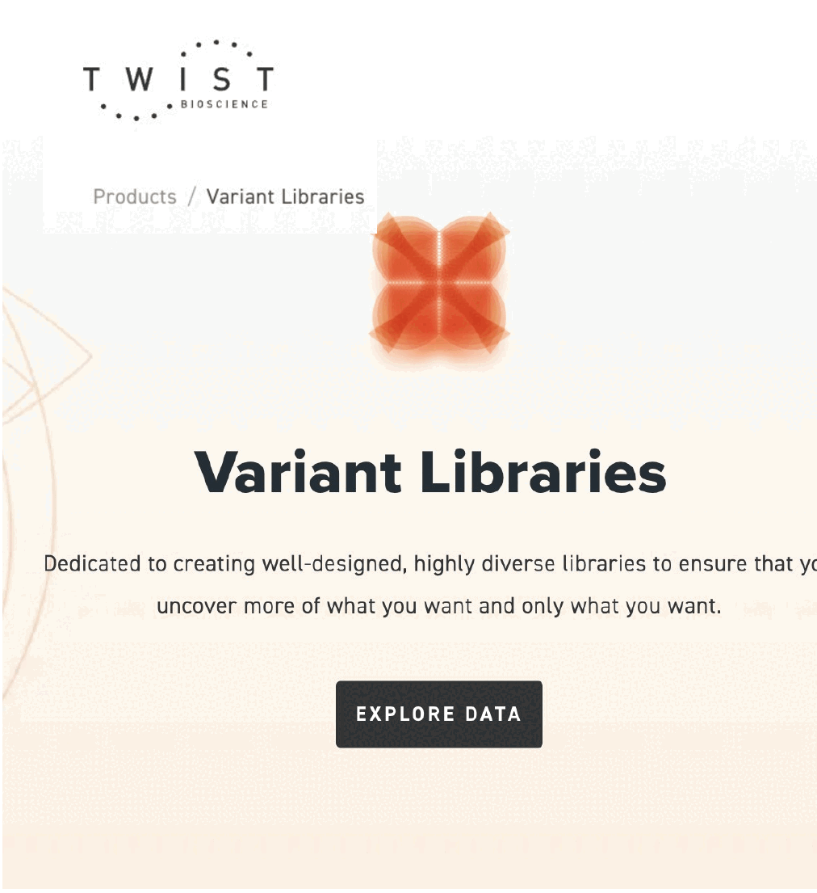
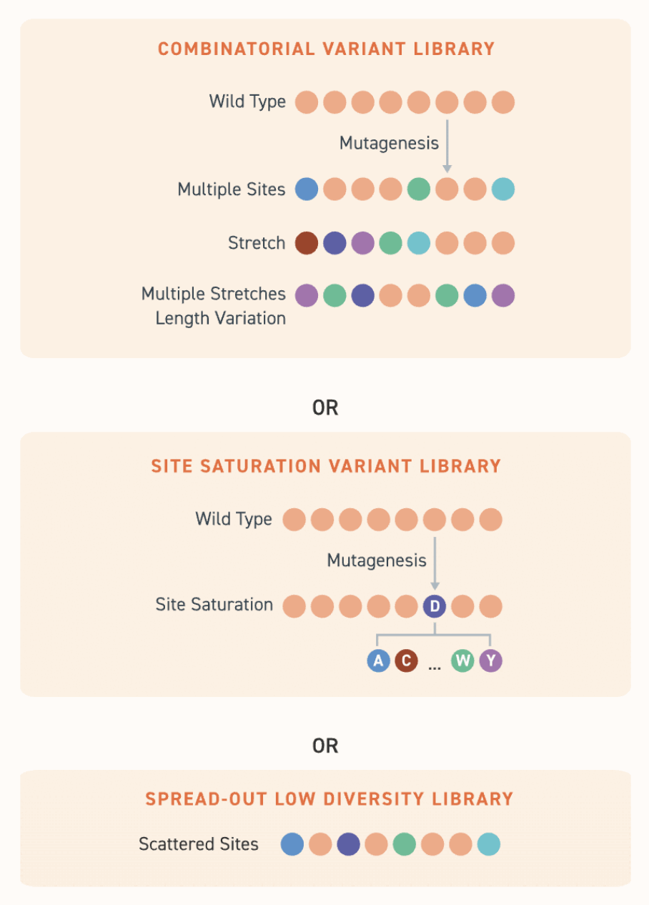

Probability that a given ticket is among the ones you bought:
p = number of tickets bought
(library size)
n = number of possible tickets
(theoretical diversity)
P = 1 − e−p/n= 0.99
p = n · ln(0.01) = 4.6n
6 numbers out of 20:
n = 6.4×107 possible tickets,
so p = 2.9×108 tickets
Nucleic Acids Res. 1998 Feb 15;26(4):879-86. PMID: 9461443
When you construct a combinatorial library, you are not explicitly synthesizing each member of the library. You are sampling this combinatorial space randomly, so there are issues of diversity and inclusion in your library. So, in practice you need to make more library members than are actually present in the theoretical library. Let’s say each draw of six numbers is one lottery ticket. The analogy of the numbers is to amino acids (hence 20), or to bases (of which there are 4), or to a set of parts that could be any number. Each member of the library can be considered as the list of chosen members at each site, and here we represent that as one lottery ticket. How many of these random tickets do I have to buy to have a 99% probability that I hold the winning one? One lottery ticket carrying the six drawn numbers — one library member — and the question that follows: how many random tickets must you buy to be 99% sure you hold the winning one?
